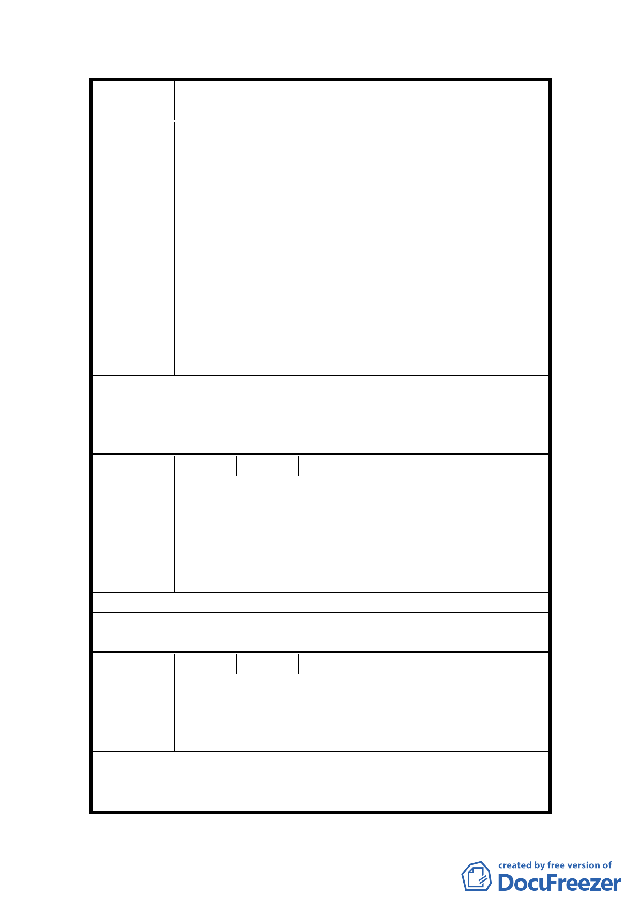

案
名
變更臺北市士林區三玉段一小段 22-3 地號等體育場用
地（天母運動公園）為臺北市立體育學用地主要計畫案
見之機會」之相對人，含一般處分之相對人（行政程
序法第 92 條第 2 項參照）。
2.本所近日得知， 貴府已經決定將臺北市之天母運動
公園變更為臺北市體育學院之校園用地，並已將該公
園之地目變更完成。該變更土地之特定利用的行政計
畫裁決行為，以及變更地目之一般行政處分行為，俱
屬違背前揭行政程序法之行為，且侵害天母運動公園
附近市民之權益。為此，特請 貴府速依法撤銷該兩
件違法行為，以確保依法行政之原則。
3.本所多位律師及成員皆為天母運動公園周遭之居民，
對該運動公園之公物（含土地及公共設施）有特別的
利用及依存關係，為保障自身權益，不得不依法為以
下所示之請求。
建議辦法
請撤銷臺北市立體育學院搬遷至天母運動公園之計畫暨
撤銷天母運動公園地目變更處分。
委員會決
議
同編號 1。
編 號 19 陳情人 天母真園 B 座管理委員會
1.反對貴局計畫變更士林區三玉段一小段 22-3 地號為
臺北體育學院用地。
陳情理由
2.請貴局珍惜天母地區碩存的空地，請體察周邊民意，
勿漠視全體市民的權益，並保留本區優質遊憩的綠色
空間特質。
3.我管理委員會鄭重反對本變更案施行。
建 議 辦 法 反對本變更案施行
委員會決
議
同編號 1。
編 號 20 陳情人 曹竹屏
天母運動公園原是一塊沼澤地，土質非常鬆軟，建天母
陳情理由
棒球場時，建商不知回填多少土方，才把場地滲水的情
形蓋住，在這樣的土地上蓋高樓作學校，非常危險，保
留作運動公園至少不會有生命的損失。
建議辦法
天母運動公園不應該變更為學校用地，體育學院校舍應
設置在地質安全的地方。
委 員 會 決 同編號 1。
18